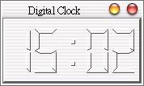

| 這個範例改寫自Qt的線上範例，利用Timer定時發出QTimerEvent事件，以製作一個LCD數位時鐘。 首先編輯dclock.h定義檔：
#ifndef DCLOCK_H 再來是編輯dclock.cpp實作定義檔的內容：
#include "dclock.h" 最後是主程式main.cpp：
#include "dclock.h" 接下來我們逐一說明這個程式中新遇到的類別、函式與主要的邏輯。Qt中的QTimer會定時發出QTimerEvent事件，我們設定了timerEvent(QTimerEvent *)來接收這個事件，一旦接收到QTimerEvent事件，timerEvent()的內容就會被執行： protected:
void timerEvent(QTimerEvent *); private slots: void showTime(); private: bool showingColon; showTime()是個自訂的Slot，我們將在這個函式中實作顯示時間的程式，showingColon用來表示是否顯示數位時鐘的秒數冒號： DigitalClock::DigitalClock(QWidget *parent, const char *name)
實作DigitalClock類別的建構函式，用來初始一些變數、視窗樣式與啟動QTimer等，setFrameStyle
()設定了QLCDNumber的外框樣式，並使用setLineWidth()設定外框為2個像素寬，QObject::startTimer
(500)表示啟動QTimer，並設定每500毫秒（0.5秒）發出QTimerEvent事件，在建構函式中，我們也使用showTime()初次取
得系統時間。 : QLCDNumber(parent, name) { showingColon = FALSE; setFrameStyle(QFrame::Panel | QFrame::Raised); setLineWidth(2); showTime(); QObject::startTimer(500); } 當接收到QTimerEvent時，這個函式就會被執行，而它目前只有一個陳述句，就是呼叫showTime()： void DigitalClock::timerEvent(QTimerEvent *e) {
showTime(); } QTimer::currentTime()會取得系統時間，我們使用toString()將之轉換為QString字串，並使用left (5)取字串中的左邊5個字元；showingColon只有兩種狀態，TRUE或FALSE，如果為TRUE，就顯示冒號，否則就將字串中冒號的位置設 為空白，如此就會有一閃一閃的效果： void DigitalClock::showTime() {
showingColon = !showingColon; QString s = QTime::currentTime().toString().left(5); if (!showingColon) s[2] = ' '; if (s[0] == '0') s[0] = ' '; display(s); } 程式的執行結果就如下圖所示：  |
|